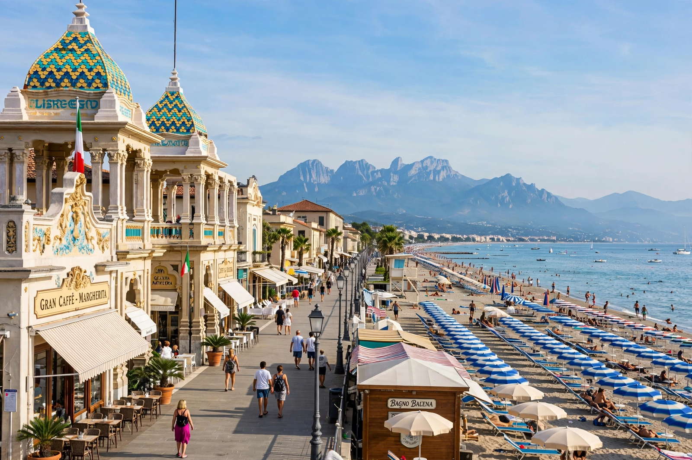

Viareggio
| Viareggio | |
|---|---|
 | |
| Country | Italy |
| Region | Tuscany |
| Province | Lucca (LU) |
| Elevation | 2 m (7 ft) |
| Population | approx. 60,000 |
| Time zone | UTC+1 (CET) |
Viareggio is a city and comune in northern Tuscany, Italy, on the coast of the Tyrrhenian Sea (part of the Versilia coast). With a population of about 60,000 it is the second-largest city in the province of Lucca. Viareggio is known as a seaside resort, for its long sandy beaches and Liberty-style (Art Nouveau) architecture, and above all for its Carnival, one of the most famous in Italy, featuring enormous papier-mâché floats.
The city is also a major centre of shipbuilding, particularly luxury yachts, and of fishing and floriculture.
History
Viareggio developed around a coastal watchtower, the Torre Matilde, built in 1541 by the Republic of Lucca to guard the mouth of the Burlamacca canal against Barbary pirates. A small settlement grew up around the harbour in the marshy coastal plain between the sea and Lake Massaciuccoli. Drainage of the surrounding marshes in the 18th and 19th centuries allowed the town to expand and become a fashionable bathing resort.
During the 19th century Viareggio became a retreat for artists and writers. The poet Percy Bysshe Shelley drowned off the coast in July 1822 when his boat, the Don Juan, sank in a storm on the return voyage from Livorno; his body was washed ashore near Viareggio and cremated on the beach, an event recorded by his friend Edward John Trelawny and Lord Byron. Giacomo Puccini lived for many years at nearby Torre del Lago, on Lake Massaciuccoli, where the annual Puccini Festival is now held.
A fire in 1917 destroyed much of the wooden seafront, and the promenade was rebuilt in eclectic and Liberty styles, giving Viareggio much of its distinctive appearance. In 2009 a freight train carrying liquefied petroleum gas derailed and exploded near Viareggio station, killing 32 people, one of Italy's worst rail disasters.
Carnival of Viareggio
The Carnival of Viareggio (Carnevale di Viareggio), founded in 1873, is renowned for its parade of huge allegorical floats made of papier-mâché, built in hangars in the purpose-built Cittadella del Carnevale. The floats, often satirising politicians and public figures, can reach over 20 metres in height. The carnival's mascot is Burlamacco, a clown figure created in 1930 by the painter Uberto Bonetti.
Economy
Shipbuilding is a pillar of the local economy: Viareggio's yards, including those of major luxury yacht builders, construct superyachts exported worldwide. Tourism, fishing, fish farming and the flower trade (the city is a centre of the Italian flower market) are also important.
Main sights
- Passeggiata (Margherita promenade) with Liberty-style buildings such as the Gran Caffè Margherita and the Bagno Balena.
- Torre Matilde, the 16th-century watchtower.
- Villa Paolina, built for Pauline Bonaparte, Napoleon's sister.
- Cittadella del Carnevale, the complex where carnival floats are built, with a carnival museum.
- The pine forest of the Pineta di Ponente and the harbour district along the Burlamacca canal.